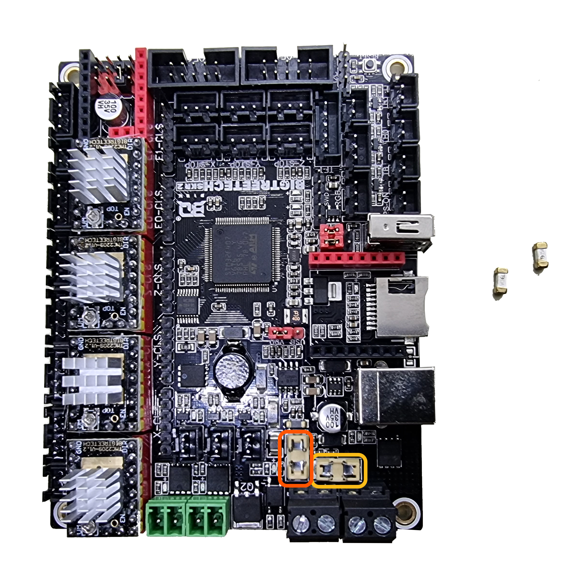

전기적인 오류
전원이 켜지지 않는 경우
전원이 켜지지 않는 경우는 4가지 경우가 있습니다.
주로 조립 직후 나타나며, 정상 출력 테스트를 진행한 뒤에는 자주 나타나는 증상은 아닙니다.
1.잘못된 디스플레이 통신선 배선
디스플레이의 통신선은 총 5핀이며, 4핀과 1핀으로 나뉘어 있습니다.
이중 4핀이 반대로 배선되어 있을 가능성이 있습니다. 다음 사진을 보고 배선상태를 확인해보세요.
{kind=link}
{kind=link}
잘못된 배선은 배선 4핀과 1핀이 꼬여보입니다.(주황색 화살표 참고)
2.잘못된 위치에 배선 - 보드
{kind=link}
● 정상적인 배선 위치
● 잘못된 배선 위치
보드에 배선하는 부분이 잘못되었을 경우가 있습니다. 사진의 경우처럼 아랫쪽 5핀에 배선한것이 아닌지 확인해보세요.
3.잘못된 위치에 배선 - 디스플레이
{kind=link}
● 정상적인 배선 위치
● 잘못된 배선 위치
디스플레이에 배선하는 부분이 잘못되었을 경우가 있습니다. 사진의 경우처럼 위쪽쪽 5핀에 배선한것이 아닌지 확인해보세요.
4.전원 공급 이상
{kind=link}
보드에 전원이 들어오는지 확인할 필요가 있습니다. 보드 커버를 열면, 전원이 켜진 상태에서는 초록색 불들이 들어와야 정상입니다.
보드에 전원은 들어오지만, 디스플레이에 화면이 켜지지 않는다면, 고객센터로 연락주시기 바랍니다. (☎ 054-604-5880)

보드에 불이 들어오지 않는다면, 파워를 확인해봐야 합니다.
파워의 안쪽에 초록불이 들어오면, 파워는 전원이 들어오는 상태임을 확인할 수 있습니다.
{kind=link}
파워는 불이 들어오지만, 보드는 불이 들어오지 않을 때, 퓨즈를 먼저 확인해봅니다.

{kind=link}
● 노란색 부분은 베드 열선과 관련된 퓨즈 (15A)
● 주황색 부분은 베드 열선을 제외한 모든 전력과 관련된 퓨즈 (10A)
{kind=link}
퓨즈는 보드 아랫쪽에 2개가 삽입되어 있습니다. 퓨즈의 위치와 퓨즈 모양입니다. 이 중에서 주황색으로 표시된 부분의 퓨즈를 뺏다가 다시 삽입해 줍니다. 그리고 다시 전원을 넣어보고, 증상이 같다면, 아래를 읽어주세요.
모든 배선을 제거하고, 파워와 디스플레이만 다시 배선해줍니다.
전원 On 하였을 경우 디스플레이, 보드, 파워가 전원이 들어오는지 확인합니다.
디스플레이까지 전원이 정상적으로 도달한다면, 부품 하나씩 배선해봅니다.
그래도 디스플레이가 작동하지 않는다면, 고객센터로 연락주시기 바랍니다. (☎ 054-604-5880)
업데이트 필요(Found outdated data)

갑작스러운 전류흐름이나 정전기, 쇼트에 의해서 디스플레이가 펌웨어를 못 찾는 경우가 있습니다.
이런 경우에는 새로 펌웨어를 업데이트 시켜주시면 됩니다.
메탈 V2 디스플레이 펌웨어는 아래중 하나를 선택하여 업데이트 해주시면 됩니다.
업데이트 방법은 해당 링크에 있습니다.
V1.3 Beta : https://cafe.naver.com/cremaker/16729
모터가 움직이지 않음
아래는 모터가 움직이지 않는 경우로 가능성이 높은 순서대로 입니다.
1. 모터 드라이버의 이상
{kind=link}
V2의 모터 드라이버는 TMC2209 입니다. 이 부품이 이상 있는지 확인하려면, 다른 축의 모터 드라이버랑 먼저 교체해보아야 합니다.
예를 들어, X축이 작동하지 않고 Y축이 작동한다면, X축과 Y축을 서로 교체합니다. 교체하는 과정은
1.전원을 끕니다.

2.사진처럼 X축, Y축 모터 드라이버를 빼냅니다.
3.서로 바꿔 끼워주고, 다시 작동을 시켜봅니다.
작동되던 축이 작동이 안되고, 작동 안되던 축이 작동이 된다면, 모터 드라이버의 문제일 가능성이 높습니다.
2. 모터 선의 이상
모터 선이 이상이 있을 경우에는 문제가 있는 모터선과 정상적인 모터선을 서로 바꿔서 배선하신뒤 작동 시켜봅니다.
작동되던 축이 작동이 안되고, 작동 안되던 축이 작동이 된다면, 모터 선의 문제일 가능성이 높습니다.
3. 잘못된 배선
배선 자체를 잘못 하셨을 경우도 있지만, 배선을 꽉 끼우지 않았을 경우도 있습니다.
{kind=link}
문제가 되는 축의 배선을 다시 뺏다가 재배선 해보시기 바랍니다.